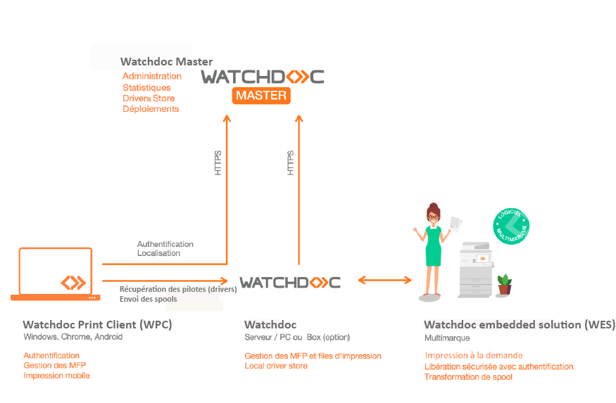
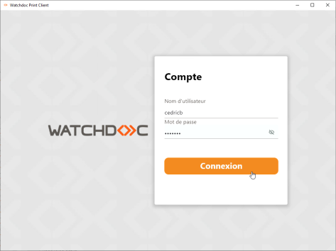
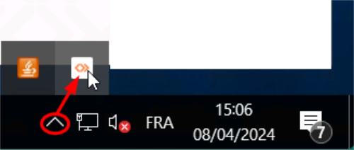
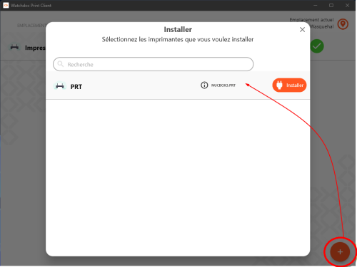
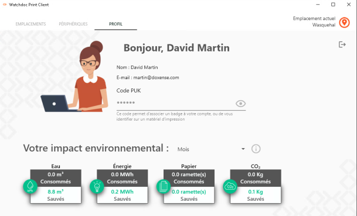

Prérequis
-
WPC for Windows est disponible à partir de la version 6.0 de Watchdoc.
Il convient de respecter les compatibilités entre Watchdoc/WSC et WPC (cf. versions téléchargeables) -
WPC nécessite une file universelle installée automatiquement (cf. Configurer une file universelle). Cette file universelle est automatiquement créée lors de l'installation de Watchdoc. Nommée Impression Universelle par défaut, elle est préconfigurée pour rediriger les fichiers de spool vers le pool
 Depuis Watchdoc 5.2, le pool d'impression est un réservoir logique conçu pour lister des travaux en attente d'impression. Le Pool (pool de travauxl) sert notamment lors de la redirection de travaux d'une file d'impression à l'autre en cas de défaillance : ainsi, lorsqu'un périphérique d'impression est indisponible, tous les autres périphériques inclus dans le même pool peuvent être sollicités pour prendre le relais. d'impression global (#global).
Depuis Watchdoc 5.2, le pool d'impression est un réservoir logique conçu pour lister des travaux en attente d'impression. Le Pool (pool de travauxl) sert notamment lors de la redirection de travaux d'une file d'impression à l'autre en cas de défaillance : ainsi, lorsqu'un périphérique d'impression est indisponible, tous les autres périphériques inclus dans le même pool peuvent être sollicités pour prendre le relais. d'impression global (#global). Outre cette file universelle par défaut, d'autres files universelles peuvent être crées en fonction des besoins.
-
WPC nécessite d'être associé à un emplacement
(anciennement "Géosites" dans les versions antérieures à la V6). Dans Watchdoc, un emplacement est un libellé appartenant à une liste structurée de sites géographiques permettant de localiser physiquement des éléments de configuration du parc d'impression (périphériques d'impression, serveurs, files, etc.).
La liste des emplacements est administrable depuis l'interface d'administration de Watchdoc.
Les emplacements sont nécessaires à la fonctionnalité Watchdoc Print Client. (cf. Gérer les emplacements). -
WPC for Windows doit être installé dans le dossier Program Files du poste de travail.
-
WPC for Windows doit être installé en tant que LocalSystem sur le poste de travail (installation recommandée).
-
WPC for Windows peut être installé avec des droits plus faibles que le compte LocalSystem sur le poste de travail. Cependant, Doxense ne recommande pas ce type d'installation et ne garantit pas le fonctionnement optimal de WPC installé avec des droits plus faibles que ceux de LocalSystem. Si vous souhaitez cependant installer WPCde cette manière, les droits suivants sont attendus :
-
Service : Folder Read/Write
-
C:\Program Files\
-
C:\Windows\System32\
-
-
Registry : Read/Write
-
HKLM\SOFTWARE\Doxense
-
HKU\{UsersSID}\Printers\Settings
-
HKLM\SYSTEM\CurrentControlSet\Control\Print\Environments\Windows x64\Drivers\Version-3
-
HKLM\SYSTEM\CurrentControlSet\Control\Print\Monitors
-
HKLM\SYSTEM\CurrentControlSet\Control\Print\Printers
-
HKLM\Software\Xerox\PrinterDriver\V5.0
-
HKU\{userSID}\Software\Microsoft\Windows NT\CurrentVersion\Windows
-
HKU\{UsersSID}\Printers\Settings
-
-
Services
-
Stop/Pause/Resume/Start service Spooler
-
-
System
-
Install/Modify/Delete Port Monitor
-
Install/Modify/Delete Driver
-
Create/Modify/Remove TCP/IP Port
-
Install/Modify/Delete Printer
-
-
Principe
Watchdoc Print Client (WPC) for Windows® est destiné aux utilisateurs équipés d'un poste de travail Windows® 10/11.
Il permet d'assurer l'installation, sur ces postes de travail, d'une configuration d'impression sécurisée, stable et conforme à une politique d'impression unique.
Il se compose d'un service Windows, d'un Port Monitor le Port Monitor de Watchdoc Print Client est un port d'impression propriétaire, lien de communication entre la partie qui opère en tant qu'utilisateur du spooler et la partie qui opère en tant que système. C’est une DLL exécutée en tant qu'utilisateur demandant une impression et qui communique avec le serveur d’impression de Windows. et d'une interface utilisateur conviviale. S'il est configuré pour fonctionner en mode silencieux, les utilisateurs bénéficient de la facilité d'imprimer sans accéder à l'interface.
le Port Monitor de Watchdoc Print Client est un port d'impression propriétaire, lien de communication entre la partie qui opère en tant qu'utilisateur du spooler et la partie qui opère en tant que système. C’est une DLL exécutée en tant qu'utilisateur demandant une impression et qui communique avec le serveur d’impression de Windows. et d'une interface utilisateur conviviale. S'il est configuré pour fonctionner en mode silencieux, les utilisateurs bénéficient de la facilité d'imprimer sans accéder à l'interface.
Watchdoc Print Client for Windows® permet :
-
d'authentifier l'utilisateur
-
de gérer la mobilité des utilisateurs
-
de permettre à des invités (non-inscrits dans l'annuaire) d'imprimer depuis un poste dédié
-
de déployer sur l'ensemble des postes de travail les pilotes d'impression installés depuis WSC - Console de supervision
-
de sécuriser l'envoi des impressions vers le serveur de proximité
-
de gérer les redirections des travaux d'impression d'un serveur à l'autre en cas de défaillance (haute-disponibilité)
-
de gérer l'impression directe en cas de défaillance des serveurs
-
d'afficher des informations de l'utilisateur, telles que son impact environnemental
-
de comptabiliser les impressions traitées par des périphériques connectés en USB (à partir des versions 6.1.0.4954 et WPC 7.0.4409).

{kind=link}
* cliquez sur l'image pour l'agrandir
Authentification
Watchdoc Print Client for Windows gère l'authentification en s'interfaçant avec les annuaires déclarés dans Watchdoc :
-
Azure Active Directory
-
Active Directory
-
LDAP
-
Comptes invités (comptes locaux) (cf. Créer un compte Invité dans Watchdoc Express ou Créer un compte Invité et Déclarer la base Invités dans Watchdoc Standard).

Mobilité
Avec WPC for Windows, les utilisateurs ont accès à leurs imprimantes de proximité.
Watchdoc utilise l'adresse IP (privée ou publique) du poste utilisateur pour déterminer automatiquement l'emplacement de l'utilisateur.
Une correspondance est alors établie entre cette adresse et les plages d'adresses IP attribuées aux emplacements lors de la configuration des Emplacements dans l'interface d'administration.
L'utilisateur peut lancer des impressions depuis son poste de travail et les débloquer sur les imprimantes disponibles à proximité. Il n'a pas à se soucier de la configuration des imprimantes, même lorsqu'il change d'emplacement.
L'utilisateur peut aussi déclarer son emplacement manuellement à partir du client WPC installé sur son poste :

Choix des périphériques d'impression
WPC for Windows installe automatiquement une file universelle (impression sécurisée).
Cette file utilise le pilote paramétré dans Plug and Print / WSC (cf. Créer des pilotes dans Plug and Print).
Les utilisateurs peuvent aussi installer eux-mêmes leur(s) imprimante(s) de proximité :

Impression sécurisée
Le port d’impression propriétaire Port Monitor le Port Monitor de Watchdoc Print Client est un port d'impression propriétaire, lien de communication entre la partie qui opère en tant qu'utilisateur du spooler et la partie qui opère en tant que système. C’est une DLL exécutée en tant qu'utilisateur demandant une impression et qui communique avec le serveur d’impression de Windows. de Watchdoc se charge de capturer les impressions lancées par l'utilisateur.
le Port Monitor de Watchdoc Print Client est un port d'impression propriétaire, lien de communication entre la partie qui opère en tant qu'utilisateur du spooler et la partie qui opère en tant que système. C’est une DLL exécutée en tant qu'utilisateur demandant une impression et qui communique avec le serveur d’impression de Windows. de Watchdoc se charge de capturer les impressions lancées par l'utilisateur.
Le service Windows transfère le fichier de spool auu serveur Watchdoc de proximité. Le transfert s'effectue sur le service DSP au serveur.
Il est sécurisé par l'usage du certificat de la PrintAPI et chiffré (transport en HTTPS).
Le serveur de proximité est déterminé automatiquement en fonction de l'emplacement de l'utilisateur.
Haute disponibilité - Impression directe
Sous réserve que la fonction d'impression à la demande interserveur soit activée et que les serveurs soient configurés en domaine (master/slaves), WPC for Windows peut être configuré en mode haute-disponibilité. Ce mode assure la fonction d'impression, même en cas de défaillance du serveur.
Dans ce cas, l'utilisateur reçoit une notification l'informant du problème et l'invitant à utiliser l'impression directe sur l'un des périphériques du parc.
L'impression directe s'applique alors jusqu'à ce que le serveur soit de nouveau opérationnel.
Notez que la haute-disponibilité nécessite un nombre important de requêtes. Lorsque ce mode est activé, il exploite donc beaucoup de ressources.
Il est possible de comptabiliser les données statistiques relatives à l'impression directe. Cependant, comme il s'agit d'un mode dégradé et que Watchdoc n'est pas sollicité, les données ne sont pas aussi détaillées que celles qui sont habituellement collectées par Watchdoc. Néanmoins, il est possible de collecter a minima des informations fournies par le spouleur MS Windows (printinfo2 : titre du document, nombre de pages, couleur (couleur ou monochrome) et utilisateur).
Informations utilisateur
Dans l'onglet Profil, les utilisateurs peuvent :
-
vérifier leurs informations,
-
retrouver leurs codes d'impression (code PUK, code PIN)
-
visualiser leur impact environnemental :

(cf. Première utilisation de WPC, Utilisation courante de WPC, et Utilisation en cas de panne).